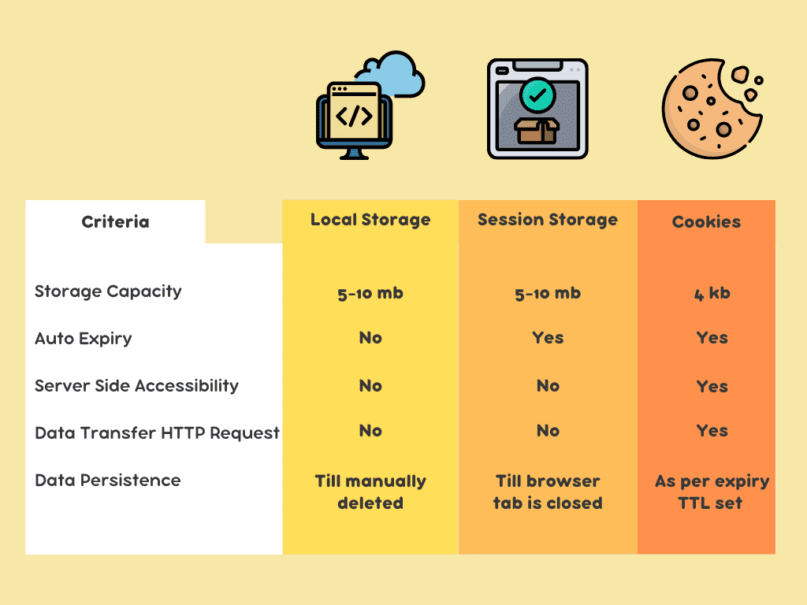
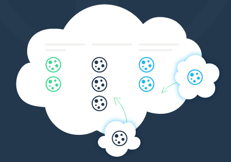
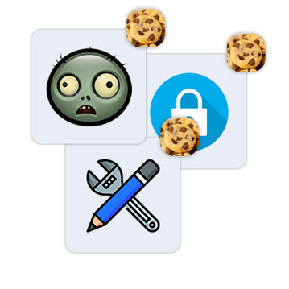

<!DOCTYPE html>
<html lang="en">
  <head>
    <meta charset="utf-8" />
    <meta name="viewport" content="width=device-width, initial-scale=1.0, maximum-scale=1.0, user-scalable=no" />

    <title></title>
    <link rel="stylesheet" href="dist/reveal.css" />
    <link rel="stylesheet" href="dist/theme/black.css" id="theme" />
    <link rel="stylesheet" href="plugin/highlight/zenburn.css" />
	<link rel="stylesheet" href="css/layout.css" />
	<link rel="stylesheet" href="plugin/customcontrols/style.css">


    <script defer src="dist/fontawesome/all.min.js"></script>

	<script type="text/javascript">
		var forgetPop = true;
		function onPopState(event) {
			if(forgetPop){
				forgetPop = false;
			} else {
				parent.postMessage(event.target.location.href, "app://obsidian.md");
			}
        }
		window.onpopstate = onPopState;
		window.onmessage = event => {
			if(event.data == "reload"){
				window.document.location.reload();
			}
			forgetPop = true;
		}

		function fitElements(){
			const itemsToFit = document.getElementsByClassName('fitText');
			for (const item in itemsToFit) {
				if (Object.hasOwnProperty.call(itemsToFit, item)) {
					var element = itemsToFit[item];
					fitElement(element,1, 1000);
					element.classList.remove('fitText');
				}
			}
		}

		function fitElement(element, start, end){

			let size = (end + start) / 2;
			element.style.fontSize = `${size}px`;

			if(Math.abs(start - end) < 1){
				while(element.scrollHeight > element.offsetHeight){
					size--;
					element.style.fontSize = `${size}px`;
				}
				return;
			}

			if(element.scrollHeight > element.offsetHeight){
				fitElement(element, start, size);
			} else {
				fitElement(element, size, end);
			}		
		}


		document.onreadystatechange = () => {
			fitElements();
			if (document.readyState === 'complete') {
				if (window.location.href.indexOf("?export") != -1){
					parent.postMessage(event.target.location.href, "app://obsidian.md");
				}
				if (window.location.href.indexOf("print-pdf") != -1){
					let stateCheck = setInterval(() => {
						clearInterval(stateCheck);
						window.print();
					}, 250);
				}
			}
	};


        </script>
  </head>
  <body>
    <div class="reveal">
      <div class="slides"><section  data-markdown><script type="text/template"><!-- .slide: class="drop" -->
<div class="" style="position: absolute; left: 0px; top: 0px; height: 700px; width: 960px; min-height: 700px; display: flex; flex-direction: column; align-items: center; justify-content: center" absolute="true">

### Le problème


notes:
Nos sites web sont servis par le protocole HTTP.

Ce dernier est sans état(stateless), ce qui signifie que lorsqu'on accède à une page d'un site web, celui-ci ne peut pas, par défaut, conserver des informations d'état à notre sujet.

`Comment peut-on alors maintenir les achats dans un panier d'achat ?`

`Comment peut-on garder l'utilisateur connecté ?`
</div></script></section><section  data-markdown><script type="text/template"><!-- .slide: class="drop" -->
<div class="" style="position: absolute; left: 0px; top: 0px; height: 700px; width: 960px; min-height: 700px; display: flex; flex-direction: column; align-items: center; justify-content: center" absolute="true">

#### Méthode de stockage web


notes:
Le navigateur offre de nombreuses options pour stocker nos données ou les conserver à travers l'accès aux différentes pages de notre site.

Certains peuvent garder plus ou moins d'informations et auront une durée de vie plus ou moins grande.

Les cookies sont un excellent moyen de partager l'état du client avec le serveur. Ils sont principalement utilisés pour l'authentification, la personnalisation et le pistage.
</div></script></section><section  data-markdown><script type="text/template"><!-- .slide: class="drop" -->
<div class="" style="position: absolute; left: 0px; top: 0px; height: 700px; width: 960px; min-height: 700px; display: flex; flex-direction: column; align-items: center; justify-content: center" absolute="true">

### Qu'est-ce qu'un cookie ?


notes:
Les cookies sont de petits fichiers de données stockés sur l'ordinateur de l'utilisateur par le navigateur web.

Les cookies sont un moyen courant de stocker des données de petite taille.

La plupart des navigateurs limitent le nombre total de cookies par domaine à environ 20 à 50.
</div></script></section><section  data-markdown><script type="text/template"><!-- .slide: class="drop" -->
<div class="" style="position: absolute; left: 0px; top: 0px; height: 700px; width: 960px; min-height: 700px; display: flex; flex-direction: column; align-items: center; justify-content: center" absolute="true">

### Types de cookies


notes:
- **Cookies de session** : Ils sont temporaires et supprimés lorsque le navigateur est fermé. Habituellement, ils sont utilisés pour maintenir le panier d'achats ou gérer des configurations temporaires.
- **Cookies persistants** : Ils ont une durée de vie prolongée et sont habituellement utilisés pour mémoriser les préférences des utilisateurs ou les informations de connexion.
- **Cookies tiers** : Cookies créés par un autre domaine que celui visité, qui tentent de suivre le comportement des utilisateurs afin de leur présenter de la publicité ajustée pour eux.

Le but des cookies créés par le domaine principal est de donner une meilleure expérience utilisateur. Ceux des tiers visent à sous-tirer des informations sur les utilisateurs afin de monétiser leur comportement.
</div></script></section><section  data-markdown><script type="text/template"><!-- .slide: class="drop" -->
<div class="" style="position: absolute; left: 0px; top: 0px; height: 700px; width: 960px; min-height: 700px; display: flex; flex-direction: column; align-items: center; justify-content: center" absolute="true">

### Création et interaction
Requête HTTP(Header):
```HTTP
Set-Cookie: loginId="abc123";
Expires=Wed, 21 Oct 2025 07:28:00 GMT; 
...
```

notes:
Un cookie est défini par une paire clé-valeur. Son comportement sera contrôlé davantage par différents attributs.

L'attribut `Expires` indique le temps de vie maximal d'un cookie sous la forme d'une date HTTP (GMT ou UTC). Si `Expires` n'est pas spécifié, le cookie devient un cookie de session.
</div></script></section><section  data-markdown><script type="text/template"><!-- .slide: class="drop" -->
<div class="" style="position: absolute; left: 0px; top: 0px; height: 700px; width: 960px; min-height: 700px; display: flex; flex-direction: column; align-items: center; justify-content: center" absolute="true">

### Autres attributs
```HTTP
Set-Cookie: ... Secure; HttpOnly; SameSite=Strict
```
notes:
L'attribut `Secure` oblige l'accès par HTTPS, permettant d'encrypter les transferts de cookies, ce qui protège contre l'interception par des attaquants sur des réseaux non sécurisés.

L'attribut `HttpOnly` empêche l'accès au cookie à partir du JavaScript (DOM). Cela permet de protéger contre les attaques XSS (Cross-Site Scripting), où un attaquant pourrait injecter du code malveillant pour accéder aux données du cookie.

L'attribut `SameSite` détermine si un cookie est envoyé avec des requêtes provenant d'autres sites(nom de domaine), ce qui aide à protéger contre les attaques CSRF (Cross-Site Request Forgery).
</div></script></section><section  data-markdown><script type="text/template"><!-- .slide: class="drop" -->
<div class="" style="position: absolute; left: 0px; top: 0px; height: 700px; width: 960px; min-height: 700px; display: flex; flex-direction: column; align-items: center; justify-content: center" absolute="true">

### Activité en javascript
```js
const d = new Date()
d.setTime(d.getTime() + (31*24*60*60*1000)) // 31 jours
let expires = "expires="+ d.toUTCString()
let him_cook = "loginId" + "=" + username + ";"
document.cookie =  him_cook + expires + ";path=/"
```

notes:
https://cosmo.zip/pub/cosmos/bin/python
</div></script></section></div>
    </div>

    <script src="dist/reveal.js"></script>

    <script src="plugin/markdown/markdown.js"></script>
    <script src="plugin/highlight/highlight.js"></script>
    <script src="plugin/zoom/zoom.js"></script>
    <script src="plugin/notes/notes.js"></script>
    <script src="plugin/math/math.js"></script>
	<script src="plugin/mermaid/mermaid.js"></script>
	<script src="plugin/chart/chart.min.js"></script>
	<script src="plugin/chart/plugin.js"></script>
	<script src="plugin/customcontrols/plugin.js"></script>

    <script>
      function extend() {
        var target = {};
        for (var i = 0; i < arguments.length; i++) {
          var source = arguments[i];
          for (var key in source) {
            if (source.hasOwnProperty(key)) {
              target[key] = source[key];
            }
          }
        }
        return target;
      }

	  function isLight(color) {
		let hex = color.replace('#', '');

		// convert #fff => #ffffff
		if(hex.length == 3){
			hex = `${hex[0]}${hex[0]}${hex[1]}${hex[1]}${hex[2]}${hex[2]}`;
		}

		const c_r = parseInt(hex.substr(0, 2), 16);
		const c_g = parseInt(hex.substr(2, 2), 16);
		const c_b = parseInt(hex.substr(4, 2), 16);
		const brightness = ((c_r * 299) + (c_g * 587) + (c_b * 114)) / 1000;
		return brightness > 155;
	}

	var bgColor = getComputedStyle(document.documentElement).getPropertyValue('--r-background-color').trim();
	var isLight = isLight(bgColor);

	if(isLight){
		document.body.classList.add('has-light-background');
	} else {
		document.body.classList.add('has-dark-background');
	}

      // default options to init reveal.js
      var defaultOptions = {
        controls: true,
        progress: true,
        history: true,
        center: true,
        transition: 'default', // none/fade/slide/convex/concave/zoom
        plugins: [
          RevealMarkdown,
          RevealHighlight,
          RevealZoom,
          RevealNotes,
          RevealMath.MathJax3,
		  RevealMermaid,
		  RevealChart,
		  RevealCustomControls,
        ],


    	allottedTime: 120 * 1000,

		mathjax3: {
			mathjax: 'plugin/math/mathjax/tex-mml-chtml.js',
		},
		markdown: {
		  gfm: true,
		  mangle: true,
		  pedantic: false,
		  smartLists: false,
		  smartypants: false,
		},

		mermaid: {
			theme: isLight ? 'default' : 'dark',
		},

		customcontrols: {
			controls: [
			]
		},
      };

      // options from URL query string
      var queryOptions = Reveal().getQueryHash() || {};

      var options = extend(defaultOptions, {"width":960,"height":700,"margin":0.04,"controls":true,"progress":true,"slideNumber":false,"transition":"slide","transitionSpeed":"default"}, queryOptions);
    </script>

    <script>
      Reveal.initialize(options);
    </script>
  </body>

  <!-- created with Advanced Slides -->
</html>
